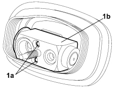
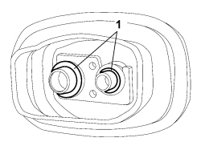

5040B30 EXPANSION VALVE (TUBE ORIFICE) - R+R
- Path
- Procedures > 50 AUXILIARY UNITS > 5040 AIR CONDITIONING CASING AND COMPONENTS > 5040B SYSTEM SAFETY CONTROL DEVICES > 5040B30 EXPANSION VALVE (TUBE ORIFICE) - R+R
- Kind
- repair procedure (removal / refitting; the operation number is the code)
- Applies to
- all engines; all production periods
- Interactive page
- https://sloeber94.github.io/elrnDB-fCrm/en/#/194000611
Applies to: all engines; all production periods
 Removing
Removing
 Refitting
Refitting- Turn the ignition key to the OFF position.
- Disconnect the negative battery terminal.
Description | Connector | |
|---|---|---|
BATTERY |
Op. 0010T84 COOLANT FOR AIR CONDITIONING SYSTEM - DEHYDRATE AND REPRESSURIZE
Op. 7210E22 R.R. WINDSCREEN BASE TRIM
1. Undo the nut (1a) fixing the coupling to the expansion valve and release the evaporator tandem supply and return pipe (1b).

Applies to: all engines; all production periods
1. Undo the bolts (1a) fixing the expansion valve (1b) and remove the latter from the vehicle.

Applies to: all engines; all production periods
1. Keep the O-ring seals from the connectors.

Applies to: all engines; all production periods
Refitting
Removing- Replace the O rings and position them on the connectors.
- Place the expansion valve in its seat and tighten the fixing bolts.
- Position the coupling on the expansion valve and fit the tandem supply and return pipe on the evaporator.
- tighten the nut fixing the coupling to the expansion valve.
Component | Fastening | dia | Value (daNm) | Validity |
|---|---|---|---|---|
EVAPORATOR/CONDENSER PIPE ON EVAPORATOR | Nut | M8 | 1,4 ÷ 1,6 |
Op. 7210E22 R.R. WINDSCREEN BASE TRIM
Op. 0010T84 COOLANT FOR AIR CONDITIONING SYSTEM - DEHYDRATE AND REPRESSURIZE
- Reconnect the negative battery terminal.
Description | Connector | |
|---|---|---|
BATTERY |
Topics linked from this page (4)
- 0010T84 COOLANT FOR AIR CONDITIONING SYSTEM - DEHYDRATE AND REPRESSURIZE
- 5040 AIR CONDITIONING CASING AND COMPONENTS
- 7210E22 R.R. WINDSCREEN BASE TRIM
- A001 BATTERY